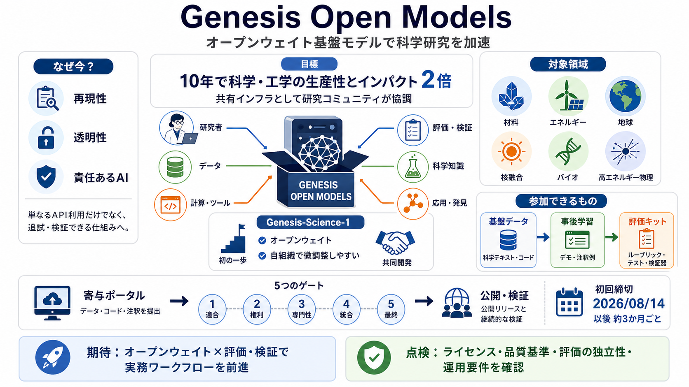

Announcing Genesis-Science-1, an Open-Weight Model ...
Its Trinity family ranges from compact models designed for local use to Trinity Large, a 400-billion-parameter sparse mi…

Its Trinity family ranges from compact models designed for local use to Trinity Large, a 400-billion-parameter sparse mi…
Trinity Large Thinking: Trinity Large Thinking: Available on OpenRouter. Try Now Arcee PlatformContact Sales # Genes…
### Summary On November 24, the White House released an Executive Order launching the Genesis Mission—a bold plan to bu…
(c) This order is not intended to, and does not, create any right or benefit, substantive or procedural, enforceable at…
Funding Opportunities Science & Innovation Artificial Intelligence Energy Department Announces $293 Milli…